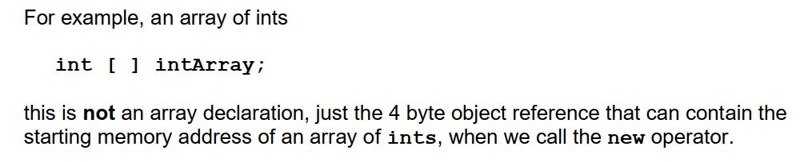
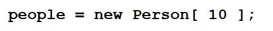
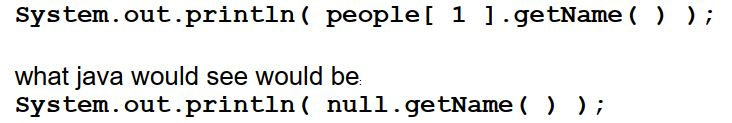

CSE1OOF
Workshop 10
Press SHIFT ? for help
Press f for fullscreen
Press CAPS for pointer
Primitive Array Review
We have seen that creating arrays in Java is a 2 step process.First, we need to declare the object reference (variable) that will contain the starting memory address of the array, when we instantiate (construct) the array, using the new operator. We indicate that this object reference is going to contain the address of an array by using the [ ]

Arrays are contiguous, meaning that the memory allocated must be in one continuous block. As well, each element of an array must be of the same type. The type comes from our object reference declaration. In the example above it is int. So each element of the example array, intArray, can contain an int.
Array Declaring & Creation Syntax
So putting both steps togther, the syntax to create an Array is;The Length may be given as any expression that evaluates to a nonnegative integer. In particular, Length can be an int variable.
For Example
Primitive Array element default values
If we have an array of primitive data types , then each element of the array is initialized to the default value for that primitive data type.The Person class
public class Person
{
private String name;
private String phone;
public Person()
{
this( "unknown", "unknown" );
}
public Person(String name, String phone)
{
this.name = name;
this.phone = phone;
}
// copy constructor
public Person( Person p )
{
name = p.name;
phone = p.phone;
}
public void setName(String newName)
{
name = newName;
}
public void setPhone(String newPhone)
{
phone = newPhone;
}
public String getName()
{
return name;
}
public String getPhone()
{
return phone;
}
public String toString()
{
return "Person[name: " + name + " phone: " + phone + "]";
}
}
Object Arrays
Arrays of objects are actually arrays of object references.To declare an array of object (references) we do the same things as we do for arrays of primitive data types. Put the type first. It is just that in this case the type is a class, not a primitive data type.
 We still do not have any Person objects. What we have is an array of object references to Person objects, 4 byte variables that can contain the starting memory address of a Person object. The contents of each element of the array is null, indicating no address. This is true of any array of object references.
 Even though there is a getName( ) method in the Person class, if we were to write this line of code;
Even though there is a getName( ) method in the Person class, if we were to write this line of code;

Because the contents of index 1 of the people array is null. This would cause a nullPointerException (crash the program) when we tried to run the program.
what java would see would be:
Since there is a Person object at this memory address, and Person objects have a getName( ) method, now our program returns a copy of the name.
Your turn
Using the Person class and the following skeleton of a driver program, complete the Tasks that add methods to the driver program PersonTester.javaNote:
After the workshop, you can make a directory in your latcs account for this worksheet and cd into it. Some files in this worksheet can be copied from the library area into your current directory using:cp /home/1st/csilib/cse1oof/ws10/* .